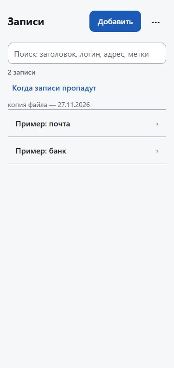
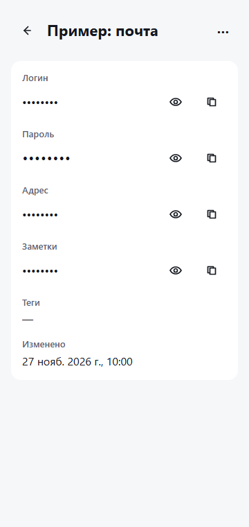
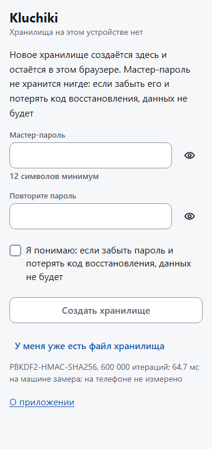

Kluchiki
Пароли в браузере
Офлайновый менеджер паролей в браузере: ни сервера, ни аккаунта, ни синхронизации.
Скриншоты



Что умеет
- Создаёт хранилище с мастер-паролем, разблокирует его и блокирует автоматически через 5 минут без ввода и после минуты в скрытой вкладке. Перезагрузка не сбрасывает сессию, пока она свежая.
- Добавляет, правит и удаляет записи; ищет по заголовку, логину, адресу и меткам, понимает другую раскладку, латиницу и одну опечатку. Пароли и логины в списке не показываются; на карточке у полей свой глазок и «Копировать».
- Генерирует пароли.
- Открывает хранилище мастер-паролем, файлом-ключом, кодом восстановления или отпечатком (WebAuthn PRF, если устройство его поддерживает). Мастер-пароль можно сменить; код восстановления показывается один раз.
- Экспортирует и импортирует файл целиком; на списке видна дата последней копии.
- Импортирует и экспортирует CSV. Колонки — как в Kaspersky Password Manager. Импорт настоящего файла Kaspersky проверен 27.11.2026; обратная выгрузка в Kaspersky не проверялась. CSV — открытый текст: приложение предупреждает об этом и не удаляет файл.
- «Стереть всё» удаляет файл в браузере, настройки и прежнюю копию.
- Работает как PWA: после первой загрузки открывается без сети; на ширине 320 px обходится без горизонтальной прокрутки и не делает запросов на чужие домены.
Где лежат данные
В IndexedDB kluchiki, одним зашифрованным файлом. Копия для переноса — скачанный файл kluchiki-ГГГГ-ММ-ДД.vault, те же байты, что в хранилище. Пока вкладка открыта, ключ сессии и время последнего ввода лежат в sessionStorage: до закрытия вкладки или 5 минут без ввода; браузер вправе сохранить его на диск. Если браузер восстанавливает вкладку, срок всё равно проверяется. Расшифрованные записи туда не попадают.
Файл зашифрован AES-256-GCM. Ключ выводится из мастер-пароля через PBKDF2-HMAC-SHA256, 600 000 итераций.
«В браузере» здесь значит: шифрует и расшифровывает ваше устройство, внутри вкладки. Сервера и аккаунта нет — отправлять пароли некуда. Ключ тела — 32 случайных байта: в файл он не попадает, там лежит он же, завёрнутый ключом из мастер-пароля. Ключ выводится из пароля через PBKDF2-HMAC-SHA256, 600 000 итераций, соль 16 байт на каждый слот. Мастер-пароль не хранится нигде.
Чего это не даёт. Открытый телефон в чужих руках: пока хранилище открыто, ключ лежит в sessionStorage вкладки, а автоблокировка — таймер. Кейлоггер в системе. Расширение браузера с доступом к странице. Запись экрана. Подмена кода на GitHub: Pages отдаёт то, что лежит в main. Офлайн-подбор слабого мастер-пароля по украденному файлу возможен всегда, скорость задаёт KDF.
Наружу уходит только то, что вы выгрузили сами: файл — зашифрованным, CSV — открытым текстом.
Как поставить на телефон
- iPhone: откройте сайт в Safari, нажмите «Поделиться» и выберите «На экран Домой».
- Android: откройте сайт в Chrome, откройте меню и выберите «Установить приложение».
После первой загрузки с сети приложение открывается без сети. Первая загрузка требует сети.
Чего не делает
- Нет автозаполнения в других приложениях и сайтах — и не будет.
- Нет синхронизации самого файла между устройствами: перенос только файлом, который вы экспортируете вручную. Passkey отпечатка может синхронизироваться аккаунтом — это отдельная вещь, см. раздел «Отпечаток».
- Нет аккаунтов и серверной части.
- Нет восстановления без кода восстановления. Мастер-пароль не хранится нигде и ни в каком виде. Забыли пароль и потеряли код — данных нет.
- Нет слота отпечатка там, где его не проверить. Слот создаётся только после проверки WebAuthn PRF на устройстве: если проверка не прошла, остаются пароль, файл-ключ и код восстановления.
- Нет нескольких хранилищ в одном браузере: одна база IndexedDB хранит ровно один файл.
- Это не замена какому-либо конкретному менеджеру паролей и не заявка на неё.
Когда записи пропадут
- «Стереть всё» в меню. Удаляет файл в браузере, все записи, способы входа и настройки. Вернуть их нельзя. Файлы, которые вы скачали, и код на бумаге остаются.
- Очистка данных сайта в браузере. Очистка истории и «данных сайтов» стирает хранилище вместе с ними. Браузер при этом не спрашивает.
- Приватное окно. Всё, что создано в приватном окне, исчезает при его закрытии.
- Мало места. Браузер сам удаляет данные сайтов, когда ему мало места. Приложение просит постоянное хранилище (navigator.storage.persist), но браузер вправе отказать — тогда на списке висит красная строка. Отказ ещё не значит, что данные уже удалены.
- iPhone и Safari. Safari стирает данные сайта, которым не пользовались неделю. Приложение на главном экране этому не подвержено. Это правило Safari; на настоящем телефоне в этом проекте не проверено.
- Другой браузер или устройство. Там своя пустая база. Записи сами не переезжают: перенос — только файлом.
- Другой адрес сайта. Данные привязаны к адресу. На другом адресе пусто; отпечаток тоже привязан к адресу.
- Удаление записи в карточке. Кнопка удаления в карточке стирает запись сразу, без отмены, и только эту запись.
Копия файла — единственное, что защищает от всего списка. Кнопка «Экспорт и импорт»; дата копии видна на списке. Файл зашифрован: без мастер-пароля его не открыть.
Отпечаток
После создания мастер-пароля приложение может предложить вход по отпечатку. Секрет даёт WebAuthn PRF: аутентификатор по соли слота возвращает 32 байта, из них выводится ключ слота. Отпечаток не хранится в файле — там лежат только идентификатор passkey и адрес сайта, для которого он создан.
Отпечаток привязан к устройству и аккаунту: если passkey синхронизируется, вход возможен и на других ваших устройствах. Но сам файл хранилища при этом не синхронизируется: на другом устройстве нужен тот же файл.
Адрес входит в passkey: слот, созданный на localhost, не сработает на домене, и наоборот. Это ожидаемое поведение, а не ошибка. Если устройство не вернуло PRF, приложение пишет «устройство не поддерживает вход по отпечатку» и оставляет пароль. Настройка обходится одним системным окном, если create() сразу вернул секрет; иначе приложение делает ровно один запрос get(). Если отпечаток перестал подходить, после входа слот можно удалить на экране «Способы входа».
Чего ещё нет
- Установки на телефон и проверки на реальном телефоне.
- Проверки в самолётном режиме.
- Проверки отпечатка на реальном телефоне: в этой версии он проверен на виртуальном аутентификаторе.
- Правило Safari про неделю не проверено на настоящем телефоне.
- Лицензия не выбрана — это открытый вопрос владельца, а не упущение.
Числа
PBKDF2-HMAC-SHA256, 600 000 итераций — 64,7 мс (медиана трёх прогонов crypto.subtle) в Chrome 158.0.8127.38 на i7-13700, замер 27.11.2026. На телефоне не измерено: числа для телефона здесь нет.
Как проверить сеть
- Откройте DevTools → Network.
- Включите Disable cache и перезагрузите страницу.
- Посмотрите список запросов: у всех должен быть этот же домен.
27.11.2026 на чистом профиле эта страница загрузила 6 файлов с этого сайта — себя, about.css, иконку и три снимка — и 0 с чужих доменов. Проверка сделана в Chrome 158.0.8127.38 headless, по журналу сервера и по Network.requestWillBeSent.
Как сверить сборку
В корне репозитория лежит BUILD-SHA256.txt: отсортированные строки «хеш, два пробела, путь» для файлов сборки — index.html, about.html, sw.js, manifest.webmanifest, app/** и src/**. Сам список, docs/, tests/, tools/ и probe.html в него не входят. Файл побайтно повторяется при повторной сборке списка.
Windows PowerShell 5.1, из папки, куда скачиваете файлы:
# Адрес сайта — без пути и без завершающего слэша.
$base = Read-Host 'Адрес сайта'
Invoke-WebRequest -UseBasicParsing "$base/index.html" -OutFile index.html
Get-FileHash index.html -Algorithm SHA256Сравните вывод со строкой index.html из списка проверяемого коммита:
git show HEAD:BUILD-SHA256.txt | Select-String ' index.html$'Для остальных файлов повторите с их путями: about.html, sw.js, manifest.webmanifest, затем файлы app/ и src/. Если проверяете не последний коммит, замените HEAD на его хеш.
Сверка доказывает «живой файл = файл из коммита». Она не доказывает, что в файле нет ошибки.